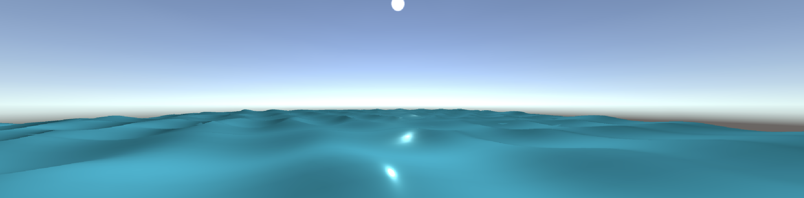

Simple Wave
In order to achieve wave effect, there are many methods to implement, from simple sine wave to FFT ocean. Simulating water wave is simple, where using multiple sine waves can easily achieve the shape of the water. Nevertheless, it is not actually similar to the realistic water. FFT(Fast Fourier Transform) Ocean is thus introduced, which is a technique that can produce incredible realism for sufficiently large sampling grids.

Sine Wave

FFT Ocean
Realistic wave does not really look like perfect sine wave. Instead, the genuine wave is steeper than that.

Steeper Wave
Thus, gerstner wave is a great choice to make realistic water wave

Sine Wave vs. Gersnter Wave